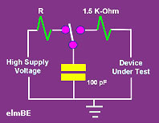
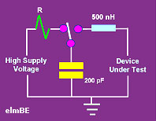

ESD Models
Electrostatic
discharge (ESD) occurs in a variety of ways, depending on where and how
the static charge is accumulated and how the charge build-up is
dissipated. There are, however, three industry-standard ESD models
that define how semiconductor devices are to be tested for ESD
sensitivity under different situations of electrostatic build-up and
discharge. These are the Human Body Model (HBM), the Charged
Device Model (CDM), and the machine Model (MM).
It is highly recommended for
every
device to undergo testing against each of these ESD models so that it
can be classified in terms of its
ESD sensitivity levels.
The
Human Body Model (HBM)
The
Human
Body Model
simulates the ESD phenomenon wherein a charged body directly transfers
its accumulated electrostatic charge to the ESD-sensitive (ESDS)
device. A common example of this phenomenon, and from which the
name of this model was derived, is when a person accumulates
static charge by walking across a carpet and then transferring all of
the charge to an ESDS device by touching it. Of course, other
'non-human' materials that accumulate and transfer charge in a similar
manner are also covered by the HBM.
Dating
back to the 19th century when it was used to investigate gas explosions
in mines, the HBM is the oldest and most commonly used model for testing
the ESD sensitivity of a device. The general ESD testing set-up
for this model consists of a 100 pF capacitor that can be charged to a
certain voltage, and then discharged by a switching component into the
device being tested through a 1.5 K-Ohm resistor. Figure 1 shows a
basic HBM test circuit.
|
 |
|
Figure
1. Basic HBM Test Circuit
|
Three
examples of
industry standards that define HBM ESD testing are JEDEC's
JESD22-A114, the
MIL-STD-883 Method
3015 and ESD Association's ESD STM5.1: Electrostatic Discharge
Sensitivity Testing -- Human Body Model.
The
Machine Model (MM)
Originated in
Japan as a result of investigating worst-case scenarios of the HBM, the
Machine Model
simulates a more rapid and severe electrostatic discharge from a charged
machine, fixture, or tool. The MM test circuit consists of
charging up a 200 pF capacitor to a certain voltage and then discharging
this capacitor directly into the device being tested through a 500 nH
inductor with no series
resistor. Figure 2 shows a basic MM test circuit.
|
 |
|
Figure
2. Basic MM Test Circuit
|
Two
examples of
industry standards that define MM ESD testing are JEDEC's JESD22-A115
and ESD Association's ESD STM5.2: Electrostatic Discharge
Sensitivity Testing -- Machine Model.
The
Charged Device Model (CDM)
Not all ESD events involve
the transfer of charge
into
the device. Electrostatic discharge
from
a charged device to another body is also a form of ESD, and a quite
commonly encountered one at that.
A device can accumulate
charge in a variety of ways, especially in situations where they undergo
movement while in contact with another object, such as when sliding down
a track or feeder. If they come into contact with another
conductive body that is at a lower potential, it discharges into that
body. Such an ESD event is known as Charged Device Model ESD,
which can even be more destructive than HBM ESD (despite its shorter
pulse duration) because of its high current.
There are currently two
widely-used models for CDM testing: 1) the Socketted Discharge Model (SDM);
and 2) the Real-world Charged Device Model (RCDM). SDM simulates a
device inserted in a socket, then charged from a high voltage source,
and then discharged through a 1-ohm resistor. SDM is easy to
conduct but is not always replicating real-world CDM ESD events.
RCDM testing consists of
putting the DUT in deadbug position on a thin dielectric (FR4), which is
then placed over a ground plate. The DUT is then charged either
directly by a charging probe or indirectly by field induction.
Each pin is then discharged through a 1-ohm resistor to ground.
Two
examples of
industry standards that define CDM ESD testing are JEDEC's
JESD22-C101 and ESD Association's ESD STM5.3.1: Electrostatic Discharge
Sensitivity Testing -- Charged Device Model.
See also:
What is ESD?;
ESD Test Waveforms;
ESDS Levels;
ESD Failures; ESD Standards;
ESD
Controls;
ESD Audit Checklist; The Triboelectric
Series
Back to Top
Home
Copyright
© 2001-2005
www.EESemi.com.
All Rights Reserved.